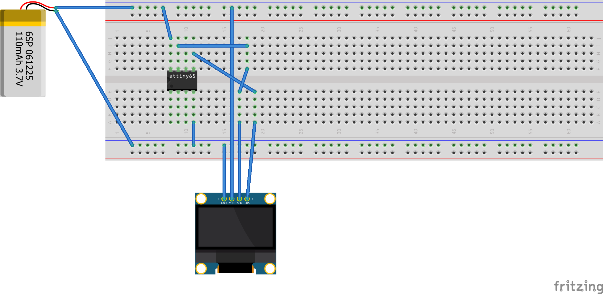
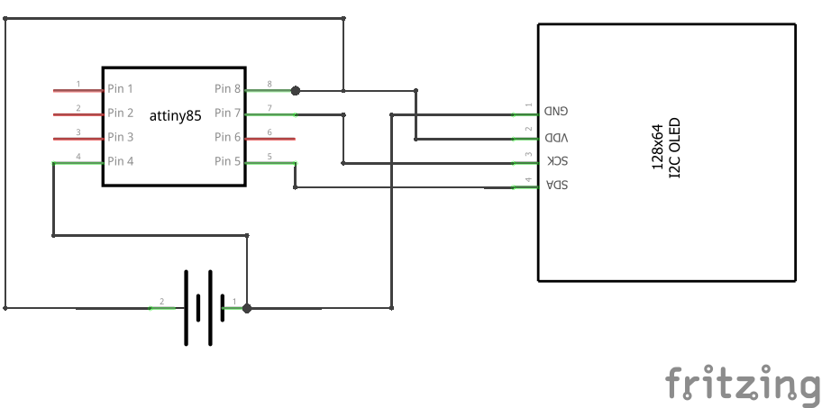

- Generated by
 1.9.8
1.9.8
|
ssd1306xled 1.0.0
SSD1306/SSD1315/SSH1106 OLED driver for ATtiny85
|
Connect four wires between the OLED breakout and the ATtiny85:
| OLED | ATtiny85 | Pin number |
|---|---|---|
| VCC | VCC | 8 |
| GND | GND | 4 |
| SCL | PB2 | 7 |
| SDA | PB0 | 5 |


If your board uses different pins for I2C, override the defaults before including the header:
Some display modules use I2C address 0x3D instead of the default 0x3C. If your screen stays blank after init, try:
Or add it to platformio.ini:
Open Tools > Manage Libraries, search for ssd1306xled, and click Install.
Download the latest .zip from the releases page.
Open Sketch > Include Library > Add .ZIP Library and select the downloaded file. The IDE copies it into your libraries folder for you.
To do it by hand instead, unzip the archive and move the resulting folder to your Arduino libraries directory:
~/Arduino/libraries/Documents\Arduino\libraries\Restart the IDE after adding the folder.
Unzip the release into your project's lib/ directory:
PlatformIO picks up anything inside lib/ automatically – no extra configuration needed.
Line by line:
_delay_ms(40)** – The SSD1306 needs a moment after power-on before it can accept I2C commands. 40 ms is safe for most boards.ssd1306_init()** – Sends the full initialization sequence (charge pump, clock, addressing mode, contrast, etc.) then fills the screen with zeros.ssd1306_setpos(0, 1)** – Moves the cursor to column 0, page 1 (the second row of 8-pixel-tall characters).ssd1306_string_font6x8("Hello world!")** – Prints the string using the built-in 6x8 font. Each character is 6 pixels wide and 8 pixels tall.If you see nothing on the screen, double-check wiring and try swapping SDA/SCL. If the display shows garbage, your module might use address 0x3D – see the pin customization section above.
The ATtiny85 has 8 KB of flash. This library was built with that constraint in mind. The AVR linker automatically strips any function your sketch does not call, so unused features cost zero flash. You don't need to configure anything for this to work.
If you use PlatformIO, you can go further by excluding font data arrays entirely with build_flags in platformio.ini:
These flags do not work in Arduino IDE (the IDE compiles library files separately and does not pass your sketch's defines to them). In Arduino IDE, the linker handles the cleanup for you.
See the Features and flash usage page for flash cost measurements and all available flags.